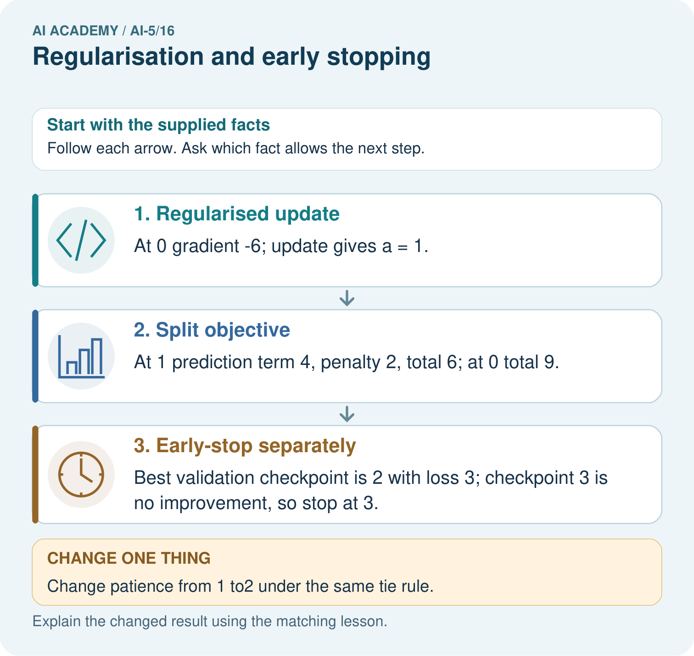
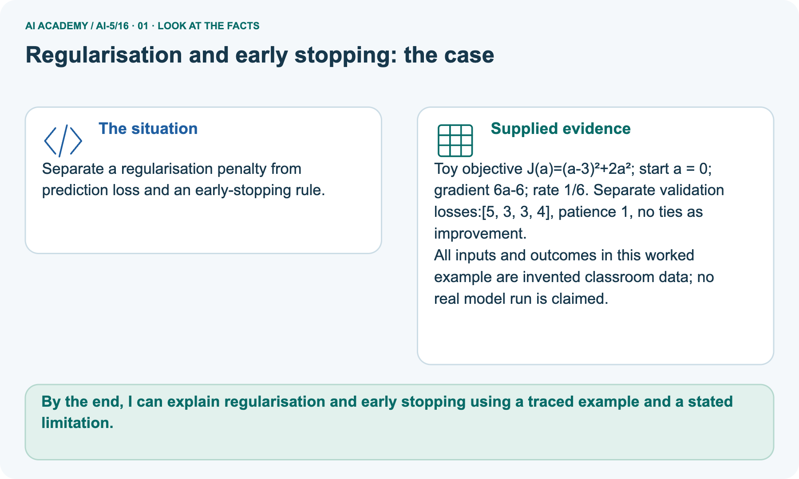
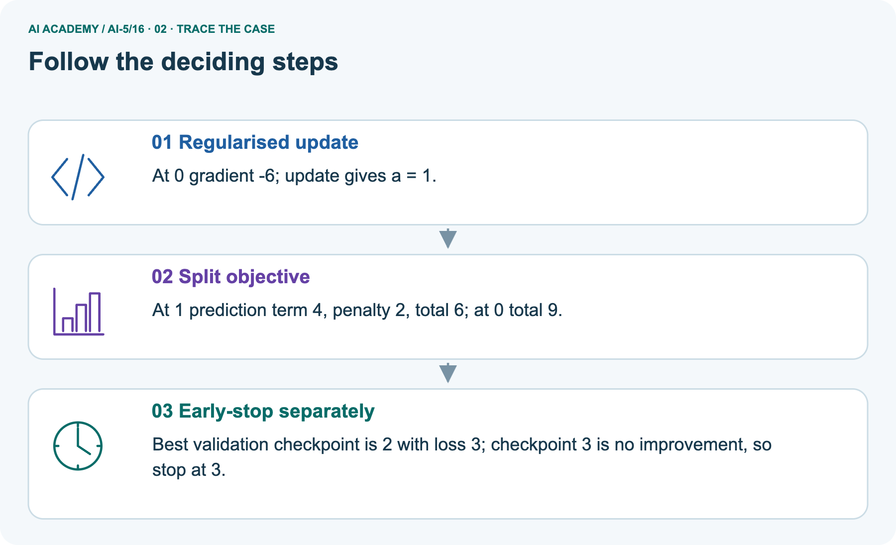
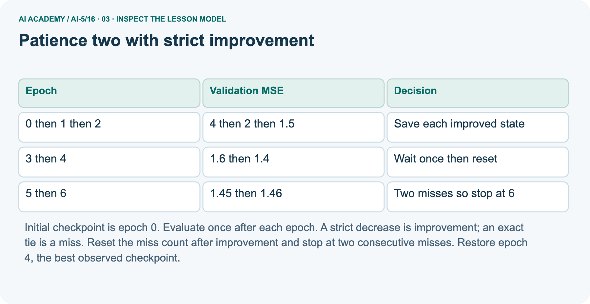
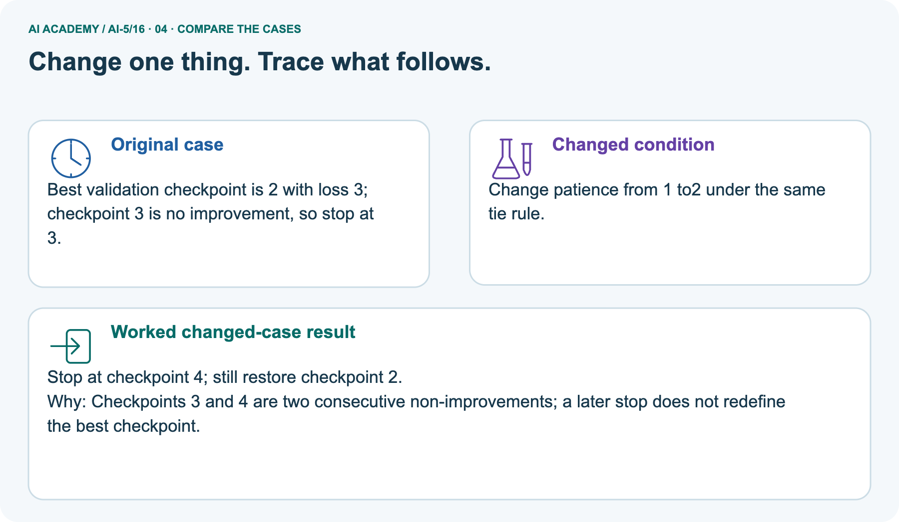

AI Academy · Level 5 · Grade 10 · Week 16 · Teacher guide
Regularisation and early stopping
Learn to understand, design, build, test and explain AI systems responsibly.
Project: Image-pattern Network Investigation
Teacher guide · 1 of 9
Prepare the purpose, prerequisites and materials
Prepare Regularisation and early stopping: check the target, prerequisites, resources and adaptable teaching schedule.
Teach the learning cycle
Primary target: Separate a weight penalty from prediction error
| Session | Sequence and minutes | Resources |
|---|---|---|
| Session 1 · Understand · 45 min | 0–7: recall and prerequisite; 7–15: inspect the concrete case and predict; 15–30: teacher models the worked trace; 30–40: learners explain a step using the text and visual; 40–45: check the core idea. | Sections 1–6; record the brief recall in the workbook. |
| Session 2 · Practise · 45 min | 0–5: retrieve the procedure; 5–15: W2 completion practice; 15–23: explain and check with a partner; 23–30: each learner answers the misconception check; 30–40: targeted reteaching or a harder variation; 40–45: prepare the investigation. | Sections 7–10; use the matching workbook W2 and misconception check. |
| Session 3 · Investigate and transfer · 45 min | 0–5: retrieve the decision rule; 5–20: investigate or trace; 20–30: start the independent case; 30–38: connect the project; 38–43: act on feedback; 43–45: plan the return check. | Sections 9 and 11–14. Give extra time to finish the full task set; use Section 15 when the week includes a coding lab. |
This is a starting allocation of 135 minutes, not a validated duration. Preserve all named topics. Schedule extra time for connected examples, the full investigation, independent cases and project building.
Repeated copies of a case share one recorded attempt; they are not new evidence.
Retrieval answer guidance
Training and validation curves
Without opening the old lesson, explain one key idea from Training and validation curves. Give an example and a mistake that the idea helps you avoid.
Look for: Compute comparable training and validation losses at saved checkpoints
Reference example, not the only acceptable wording: Teacher explanation: Predictions [3, 4], residuals [-1.5, -2], squares [2.25, 4], MSE 3.125.
Batching and epochs
Without opening the old lesson, explain one key idea from Batching and epochs. Give an example and a mistake that the idea helps you avoid.
Look for: Distinguish an example a batch an update and an epoch
Reference example, not the only acceptable wording: Teacher explanation: Batch lengths 4, 4, 2; three updates per epoch, nine total updates and 30 example visits.
Gradients with a numerical check
Without opening the old lesson, explain one key idea from Gradients with a numerical check. Give an example and a mistake that the idea helps you avoid.
Look for: Estimate one partial derivative while other parameters stay fixed
Reference example, not the only acceptable wording: Teacher explanation: Prediction 3, residual 0, loss 0, gradient [0, 0].
Use two 45-minute sessions. Keep prediction error, penalty and total objective in separate columns. Teach early stopping as a second mechanism with a precise state machine on paper.
Cover future curve values until a decision is made; do not reward retrospective selection as if it were a live stopping rule.
Outcomes
Separate a weight penalty from prediction error
Trace a regularised update under a stated objective
Apply a stopping rule and restore the best observed checkpoint
Preparation
Printed lesson and workbook; paper and pencil
Calculator and optional local Python 3 editor; no packages or AI accounts needed
Use the fictional examples supplied; prepare the fresh retry before class
Prerequisite answer
Restore the parameters saved at the chosen checkpoint. The last parameters produced by training may have a different validation loss.
End goal for the pictorial case
By the end, I can explain regularisation and early stopping using a traced example and a stated limitation.
This added worked case illustrates the week’s main idea. Retain all original and connected topics; schedule its practice within the teaching cycle.
Teacher guide · 2 of 9
Explain and model the mechanism
Model Regularisation and early stopping using the supplied case, labelled mechanism and reasoning. Make the scope of each conclusion explicit.
Keep h = ReLU(x), y = vh, train only v on (1, 2) and (2, 4), and freeze all hidden parameters and the zero output bias. Training MSE is L(v) = 2.5(v - 2) squared.
Define J(v) = L(v) + lambda times v squared, with lambda nonnegative. Only this one output weight is penalised here.
For lambda = 0.5, the penalty at v = 1.5 is 0.5 times 2.25 = 1.125. Prediction MSE is 0.625, so total objective J is 1.75. Keep these quantities separate in logs.
A smaller total objective does not automatically mean a smaller prediction error.
Among these three candidates, the smallest penalised objective is at v = 1.5, whereas the smallest training MSE is at v = 2. Penalising a weight changes the tradeoff.
It does not guarantee better validation performance or fair outcomes.
The data gradient is 5(v - 2). The penalty gradient is 2 times lambda times v, giving total gradient 5(v - 2) + 2 lambda v. At v = 1.5 and lambda = 0.5, these contributions are -2.5 and 1.5, so total gradient is -1.
A rate 0.1 step gives v = 1.6.
Assume finite numeric values and nonnegative penalty. At the new v, data loss is 0.4, penalty 1.28 and total 1.68.
Choose penalty strength using a declared validation prediction metric, not by comparing total objectives with different lambdas as if they were the same measure.
| Term | Meaning |
|---|---|
| Regularisation | A constraint or training procedure intended to limit fitting choices and improve generalisation |
| Weight penalty | An added objective term that discourages specified large parameter values |
| Patience | The allowed run of consecutive non-improving evaluations before stopping under a stated rule |
| Restore | Reload the parameters saved at the selected checkpoint |
Patience two with strict improvement
Explain Regularisation and early stopping · 1
Guided: miss counts at epochs 3, 4, 5, 6 are 1, 0, 1, 2. Stop at 6 and restore 4. Exit: using final parameters ignores restoration; selecting patience with test losses uses test data for development.
Restore the selected checkpoint, choose policy using validation, then freeze it before evaluating suitable untouched final examples.
Model the reasoning aloud
Use the complete worked example below before asking learners to complete W2. Reveal a small part, invite a prediction, then explain the deciding step.
These teacher notes contain solutions; do not reveal the independent case answer during modelling.
Patience two with strict improvement
| Thinking move | Teacher prompt |
|---|---|
| Plan | What is given? What is the question? Which procedure fits these facts? |
| Do | Point to each input and intermediate step in the worked trace. Name the rule that allows the next step. |
| Check | Does the output answer the question? Which assumption or limitation prevents a larger claim? |
Use the diagram and verbal explanation together. Ask learners to match a sentence to a specific visual step; do not assign learners fixed visual or auditory learning styles.
A pictorial worked case: Regularisation and early stopping
Separate a regularisation penalty from prediction loss and an early-stopping rule.
The facts we will use
Supplied facts
Toy objective J(a)=(a-3)²+2a²; start a = 0; gradient 6a-6; rate 1/6. Separate validation losses:[5, 3, 3, 4], patience 1, no ties as improvement.
Supplied facts
All inputs and outcomes in this worked example are invented classroom data; no real model run is claimed.

Read the picture one step at a time
Why this result follows
Why the result follows
Regularisation adds a parameter penalty to the training objective. Here it discourages large a, so the objective balances prediction error against that penalty.
Early stopping is a different decision based on the supplied validation sequence. A tied validation loss is not improvement under this policy; stop when the patience allowance is used and restore the best checkpoint.
What this example does not establish
Keep the stated limit
Regularisation and early stopping are different tools; neither guarantees better performance in every dataset.
Change one thing in the pictured case
Change one thing
Change: Change patience from 1 to2 under the same tie rule.
Predicted result
Prediction: Stop at checkpoint 4; still restore checkpoint 2.
Why the result follows
Reason: Checkpoints 3 and 4 are two consecutive non-improvements; a later stop does not redefine the best checkpoint.
Ask while showing the picture
Ask while showing the picture · 2
Cover the result. Ask learners to name the inputs and predict the next step. Uncover one step, connect the icon to the actual procedure, and explain its evidence. Then change the supplied condition and compare.
The picture is a representation; it does not document execution of a real AI model.
Teacher guide · 3 of 9
Demonstrate and guide practice
Demonstrate Regularisation and early stopping, reduce support deliberately and check individual reasoning before discussing answers.
| Time or stage | Teacher action |
|---|---|
| Session 1 start to 7 minutes | Retrieve checkpoint restoration and introduce the named penalised weight. |
| 7 to 18 minutes | Calculate the objective table and W1, identifying the nonzero penalty gradient at v = 2. |
| 18 to 32 minutes | Trace the worked regularised update and use W2 for the next step. |
| 32 to 45 minutes | Run or trace the code and distinguish objective reduction from validation evidence. |
| Session 2 start to 8 minutes | Reveal the validation sequence one epoch at a time; complete the guided miss counts. |
| 8 to 20 minutes | Complete W3 before revealing the future value; compare stopping and restored epochs. |
| 20 to 35 minutes | Collect W4 independently, scoring the arithmetic and the tied-loss policy separately. |
| 35 to 45 minutes | Discuss W5 and the exit response, then use the fresh retry and record the complete policy. |
Use the worked example in Sections 3 and 6. Collect a prediction before revealing its result; ask the learner to point to each intermediate fact.
Use a ledger with columns epoch, metric, best epoch and miss count; cover future rows. Extension: solve 5(v - 2) + 2 lambda v = 0 to obtain v = 10 / (5 + 2 lambda).
For nonnegative lambda, discuss why the optimum moves toward zero without claiming this always improves prediction.
Reduce help deliberately
Completion practice
Completion task: Start v = 1.6 with lambda = 0.5 and rate 0.1. Calculate both gradient contributions, new v and new prediction MSE.
Reasoning to listen for
Teacher check: Teacher explanation: Data gradient -2, penalty gradient 1.6, total -0.4. New v = 1.64; prediction MSE is 2.5 times 0.36 squared = 0.324.
Start by identifying the given inputs together. Leave the intermediate steps blank. If needed, model one step, then withdraw that help on the next step. Move to a full trace only when the partial trace is understood.
For partners, alternate explainer and checker; collect a response from every learner before discussion.
Individual reasoning check
Use the worked case for Regularisation and early stopping. Proposed explanation: “Zero prediction error means no regularised update”. Decide whether this explanation is supported.
Point to the step or supplied fact that decides; explain your repair if needed.
Expected repair
Expected correction: The penalty gradient can remain nonzero.
Collect explanations, not only yes/no votes. If a misunderstanding is common, re-model the relevant step for the class.
If it affects a few learners, give a short targeted group explanation while others solve a more demanding variation.
Pictorial practice question
Why should the penalty value not be reported as validation error? Point to the relevant step in the picture, then write the changed result and the rule or evidence that supports it.
Reasoned teacher answer
It is part of the training objective, not the measured validation prediction loss. Report these separate quantities with their definitions. Changed-case check: Stop at checkpoint 4; still restore checkpoint 2.
Checkpoints 3 and 4 are two consecutive non-improvements; a later stop does not redefine the best checkpoint.
Changed-case reasoning: Stop at checkpoint 4; still restore checkpoint 2. Checkpoints 3 and 4 are two consecutive non-improvements; a later stop does not redefine the best checkpoint.
Collect each learner’s explanation before discussion. Use the first missing connection between input, deciding step and result to choose support. This question is worked-case practice, not fresh mastery evidence.
Teacher guide · 4 of 9
Run the investigation and diagnose misconceptions
Run the Regularisation and early stopping investigation and use the first unsupported step to choose a teaching response.
Zero prediction error means no regularised update: The penalty gradient can remain nonzero.
Early stopping adds a weight penalty: It limits training duration using a validation rule; a weight penalty changes the objective.
Restore the epoch where stopping happened: Restore the best observed checkpoint under the declared rule, which can be earlier.
Use Section 9 for the evidence ledger. Add a boundary or missing-input case and record the expected response before checking. More successful repeats of one case do not establish wider coverage.
Match the support to the first error
| What the response shows | Next teaching action |
|---|---|
| Missing or misread facts | Read the case aloud, mark supplied versus unknown facts, and let the learner restate it. |
| Wrong procedure | Return to the deciding step in the worked case. Contrast it with the proposed incorrect explanation. |
| Arithmetic or implementation error | Trace intermediate values or lines; preserve the first mismatch and retry that step. |
| Correct result without a reason | Ask for a trace and a changed case before marking independent understanding. |
| An unsupported wider claim | Ask which supplied evidence supports the claim and which further observation would be needed. |
Offer an oral explanation, drawing, enlarged visual or fewer examples when that removes a reading/writing barrier. Keep the same reasoning goal.
Stretch secure learners by changing a boundary or assumption and asking them to defend the effect, not simply by assigning more of the same questions.
Teacher guide · 5 of 9
Assess and explain the answers
Use the Regularisation and early stopping questions, teacher keys and criteria after the relevant attempts. Previously discussed cases are practice; protect the separately selected independent task.
Guided and exit questions
Guided: miss counts at epochs 3, 4, 5, 6 are 1, 0, 1, 2. Stop at 6 and restore 4. Exit: using final parameters ignores restoration; selecting patience with test losses uses test data for development.
Restore the selected checkpoint, choose policy using validation, then freeze it before evaluating suitable untouched final examples.
W1 Separate the objective terms
Workbook question · W1
At v = 2 and lambda = 0.5 in the lesson, compute prediction MSE, penalty, total objective and total gradient. Does zero training MSE make this gradient zero?
Teacher reasoning · W1
Teacher explanation: MSE 0, penalty 2, total J 2, total gradient 2. Zero data gradient does not remove the penalty gradient.
W2 Trace the next update
Workbook question · W2
Start v = 1.6 with lambda = 0.5 and rate 0.1. Calculate both gradient contributions, new v and new prediction MSE.
Teacher reasoning · W2
Teacher explanation: Data gradient -2, penalty gradient 1.6, total -0.4. New v = 1.64; prediction MSE is 2.5 times 0.36 squared = 0.324.
W3 Apply patience without peeking
Workbook question · W3
Validation MSE at epochs 0 to 7 is [4, 2, 1.5, 1.6, 1.4, 1.45, 1.46, 1.3]. Apply the lesson policy with patience 2. Give the stop epoch, restored epoch and why the listed epoch 7 cannot change this decision.
Teacher reasoning · W3
Teacher explanation: Stop at epoch 6 after misses at 5 and 6; restore epoch 4 with MSE 1.4. A live run has stopped before observing epoch 7; hindsight cannot be included in that policy decision.
W4 Transfer both rules independently
Workbook question · W4
For a new objective J(a) = (a - 2) squared + a squared, gradient 4a - 4, start a = 0 and take one step at rate 0.25. Give new a, prediction error term, penalty and total J.
Separately apply patience 2 with strict improvement to validation values [3, 2, 2, 2, 1] at epochs 0 to 4; report the stop and restored epochs.
Teacher reasoning · W4
Teacher explanation: The update gives a = 1. Prediction error 1, penalty 1, total J 2. For the separate curve, epoch 1 is best at 2; ties at 2 and 3 are two misses, so stop at epoch 3 and restore epoch 1.
Epoch 4 is not observed by that live policy.
W5 Compare penalties fairly
Workbook question · W5
A team compares lambda 0 and lambda 0.5 by choosing whichever has the smaller penalised training objective. Explain why this does not establish the better prediction model and name a suitable development comparison.
Teacher reasoning · W5
Teacher explanation: The objectives use different penalties, and both are training quantities. Compare the candidates on the same fixed validation examples using the same declared prediction metric, such as ordinary MSE.
Reserve final test examples from setting selection.
Independent assessment and fresh retry
Teacher key · Independent assessment and fresh retry
W4 requires a = 1 and terms 1, 1, 2 plus stop epoch 3 and restored epoch 1. Fresh retry: J(b) = (b - 3) squared + 0.5b squared, gradient 3b - 6; start b = 0, rate 0.25. New b = 1.5, data term 2.25, penalty 1.125, total 3.375.
On validation [5, 3, 3.2, 3.1] with patience 2, stop at 3 and restore 1.
Assess independent transfer
Independent question · withhold the key
Selected case: For a new objective J(a) = (a - 2) squared + a squared, gradient 4a - 4, start a = 0 and take one step at rate 0.25. Give new a, prediction error term, penalty and total J.
Separately apply patience 2 with strict improvement to validation values [3, 2, 2, 2, 1] at epochs 0 to 4; report the stop and restored epochs.
Selected case answer
Teacher key · Selected case answer
Teacher explanation: The update gives a = 1. Prediction error 1, penalty 1, total J 2. For the separate curve, epoch 1 is best at 2; ties at 2 and 3 are two misses, so stop at epoch 3 and restore epoch 1.
Epoch 4 is not observed by that live policy.
| Dimension | Evidence required |
|---|---|
| Explanation | Names the applicable idea or procedure and ties it to the supplied facts. |
| Trace and result | Preserves the given inputs and shows the relevant intermediate steps; distinguishes a prediction from an observed execution. |
| Limits | States the assumptions, missing evidence or conditions under which the result would change. |
Teacher key · Selected case answer
Record each dimension as not yet, with support, or independent. Accept a valid alternative procedure with a defensible trace.
Do not penalise an honestly recorded model failure if the learner correctly explains its evidence and limits.
Feedback that the learner uses
Name the earliest unsupported step and give one action to repair it. Have the learner make that repair now and explain why. Then assess the relevant skill on a fresh, fully specified case.
Confirm it was not previously practised with feedback; solve and check the new case before assigning it. A follow-up design prompt is a starting brief, not automatically an equivalent test.
Teacher guide · 6 of 9
Connect the project, support and next lesson
Connect Regularisation and early stopping to Image-pattern Network Investigation, adapt support and plan a later changed-case check.
Add a labelled regularisation and early stopping evidence sheet to Image-pattern Network Investigation. Show how you can separate a weight penalty from prediction error.
Use the supplied fictional case and keep its inputs, intermediate steps, calculation or prediction, and limitation. Connect this record to last week’s record; a matching answer without a trace is insufficient.
Use a ledger with columns epoch, metric, best epoch and miss count; cover future rows. Extension: solve 5(v - 2) + 2 lambda v = 0 to obtain v = 10 / (5 + 2 lambda).
For nonnegative lambda, discuss why the optimum moves toward zero without claiming this always improves prediction.
Week 17 investigates initialisation and reproducibility.
Retain the project ledger and assess a changed case after support. Check the relevant prerequisite before carrying this component forward.
Plan the delayed return
Suggested return points in this level: ai-5/17, ai-5/19, ai-5/22. Use actual classroom dates, adjusting for holidays and gaps. One, three and six teaching weeks are scheduling choices, not a claimed optimal spacing.
At a delayed check, ask for the idea from memory and a changed application. Compare with the earlier independent response and record support used.
For a new level, revisit the previous capstone before checking the new prerequisites.
| Record | Teacher evidence |
|---|---|
| Learner code and date | |
| Concept and case used; prior exposure | |
| Explanation / trace / limits | |
| Support and first repair | |
| Changed case and delayed outcome | |
| Next teaching action |
Use the evidence to choose reteaching or the next step. A completed page, confidence rating or attractive project does not by itself demonstrate understanding.
Project evidence from this case
For your Image-pattern Network Investigation, save the input, procedure, observed result and limitation of this check.
Label this worked example as practice; use a different, previously unreviewed case when checking independent understanding.
Teacher guide · 7 of 9
Prepare, teach and assess
Use this preparation summary alongside the detailed Regularisation and early stopping lesson; it is a checklist rather than a replacement for the full sequence.
Teaching target
Teaching target: Separate a weight penalty from prediction error
Prepare the labelled worked-case picture, the matching workbook, fictional input cards and a place for individual responses. Check a local Python 3 environment before class; have a paper-trace version ready.
| Session | Plan | Resources |
|---|---|---|
| Session 1 · Understand · 45 min | 0–7: recall and prerequisite; 7–15: inspect the concrete case and predict; 15–30: teacher models the worked trace; 30–40: learners explain a step using the text and visual; 40–45: check the core idea. | Sections 1–6; record the brief recall in the workbook. |
| Session 2 · Practise · 45 min | 0–5: retrieve the procedure; 5–15: W2 completion practice; 15–23: explain and check with a partner; 23–30: each learner answers the misconception check; 30–40: targeted reteaching or a harder variation; 40–45: prepare the investigation. | Sections 7–10; use the matching workbook W2 and misconception check. |
| Session 3 · Investigate and transfer · 45 min | 0–5: retrieve the decision rule; 5–20: investigate or trace; 20–30: start the independent case; 30–38: connect the project; 38–43: act on feedback; 43–45: plan the return check. | Sections 9 and 11–14. Give extra time to finish the full task set; use Section 15 when the week includes a coding lab. |
Before class, solve the supported practice: Start v = 1.6 with lambda = 0.5 and rate 0.1. Calculate both gradient contributions, new v and new prediction MSE.
Supported practice answer
Reasoned practice answer: Teacher explanation: Data gradient -2, penalty gradient 1.6, total -0.4. New v = 1.64; prediction MSE is 2.5 times 0.36 squared = 0.324.
Check every learner before discussion: Use the worked case for Regularisation and early stopping. Proposed explanation: “Zero prediction error means no regularised update”. Decide whether this explanation is supported.
Point to the step or supplied fact that decides; explain your repair if needed.
Repair the misconception
Misconception repair: The penalty gradient can remain nonzero.
Support without giving away the answer
Support: read the exact case aloud, enlarge the labelled picture, supply input cards and model only the first deciding step. Accept a spoken explanation or drawing; retain the reasoning goal.
Extend the reasoning
Extension: Change patience from 1 to2 under the same tie rule. Require a prediction and a reason before comparing. Expected result: Stop at checkpoint 4; still restore checkpoint 2.
Reason: Checkpoints 3 and 4 are two consecutive non-improvements; a later stop does not redefine the best checkpoint.
Protect the independent attempt
Independent assessment: withhold the reserved answer until the learner has attempted the new case. Record support separately from correctness.
| Criterion | Not yet | With support | Independent |
|---|---|---|---|
| Explanation | Names an answer without a deciding fact | Uses a hint to link fact and decision | Explains the deciding fact in own words |
| Trace or test | Cannot connect input and result | Completes steps with prompts | Traces or tests a changed case accurately |
| Limits and revision | Claims more than evidence supports | Names a limit after a prompt | States a defensible limit and useful next test |
Project checkpoint
Project checkpoint: Test changed cases. Keep normal, boundary and failure cases; compare expected and observed results.
Use the weekly teacher answer for topic-specific reasoning. A saved progress tick is an activity record; judge mastery from the learner’s explanation and evidence.
Teacher guide · 8 of 9
Use feedback, labs and repair paths
Use feedback, earlier review and portfolios purposefully. Apply the coding routine only when this lesson has an executable lab.
Use the two formative questions as supported practice, not as independent mastery scores. Discuss the deciding evidence rather than accepting a guessed selection.
The feedback comes from the reviewed public worked case. Do not reveal the separately reserved independent teacher answer until the learner has attempted that case.
Ask students to predict before running code. Preserve errors and actual outputs; collect a changed test and an explanation. The branch-boundary and indexing lessons deliberately include failure cases.
Use the earlier worked-explanation links to address a specific missing building block, then return to the current question. Adapt this suggestion after observing the learner; it is not an automatic diagnosis.
Collect the completed-work portfolio as evidence. Record support separately from correctness, and assess explanation, trace/test and limitations. Progress ticks and quiz selections alone do not establish mastery.
Teacher guide · 9 of 9
Visual concept journey
Show one Regularisation and early stopping graphic at a time, request a prediction and discuss its trace before the independent assessment.
Use one picture at a time. Hide a worked result before asking for a prediction, then reveal it for feedback. These are supported teaching cases; retain the separate independent assessment for a fresh first attempt.
01. Regularisation and early stopping: the case

Separate a regularisation penalty from prediction loss and an early-stopping rule. Supplied facts: Toy objective J(a)=(a-3)²+2a²; start a = 0; gradient 6a-6; rate 1/6.
Separate validation losses:[5, 3, 3, 4], patience 1, no ties as improvement. All inputs and outcomes in this worked example are invented classroom data; no real model run is claimed.
Point to the given fact that matters most. Explain why it matters.
Discuss while showing the picture
Teacher prompt: Point to the given fact that matters most. Explain why it matters. Ask learners to describe one label or arrow in ordinary words. Use the adjacent transcript if the image is difficult to see.
02. Follow the deciding steps

Regularised update: At 0 gradient -6; update gives a = 1. → Split objective: At 1 prediction term 4, penalty 2, total 6; at 0 total 9. → Early-stop separately: Best validation checkpoint is 2 with loss 3; checkpoint 3 is no improvement, so stop at 3.
Point to each numbered stage and explain which recorded input it uses.
Discuss while showing the picture
Teacher prompt: Point to each numbered stage and explain which recorded input it uses. Ask learners to describe one label or arrow in ordinary words. Use the adjacent transcript if the image is difficult to see.
03. Patience two with strict improvement

Patience two with strict improvement. 0 then 1 then 2 | 4 then 2 then 1.5 | Save each improved state. 3 then 4 | 1.6 then 1.4 | Wait once then reset. 5 then 6 | 1.45 then 1.46 | Two misses so stop at 6
Read the labels and values. Explain the relationship the model shows.
Discuss while showing the picture
Teacher prompt: Read the labels and values. Explain the relationship the model shows. Ask learners to describe one label or arrow in ordinary words. Use the adjacent transcript if the image is difficult to see.
04. Change one thing. Trace what follows.

Original case: Best validation checkpoint is 2 with loss 3; checkpoint 3 is no improvement, so stop at 3. Changed condition: Change patience from 1 to2 under the same tie rule.
Expected result: Stop at checkpoint 4; still restore checkpoint 2. Reason: Checkpoints 3 and 4 are two consecutive non-improvements; a later stop does not redefine the best checkpoint.
Predict before checking the worked changed-case result. Name what changed and what the supplied facts allow you to conclude.
Discuss while showing the picture
Teacher prompt: Predict before checking the worked changed-case result. Name what changed and what the supplied facts allow you to conclude. Ask learners to describe one label or arrow in ordinary words.
Use the adjacent transcript if the image is difficult to see. Changed-case reasoning: Checkpoints 3 and 4 are two consecutive non-improvements; a later stop does not redefine the best checkpoint.
05. Connect the explanation to its limit

Regularisation adds a parameter penalty to the training objective. Here it discourages large a, so the objective balances prediction error against that penalty.
Early stopping is a different decision based on the supplied validation sequence. A tied validation loss is not improvement under this policy; stop when the patience allowance is used and restore the best checkpoint.
Limit: Regularisation and early stopping are different tools; neither guarantees better performance in every dataset.
Explain the case, then point to a limit on the claim.
Discuss while showing the picture
Teacher prompt: Explain the case, then point to a limit on the claim. Ask learners to describe one label or arrow in ordinary words. Use the adjacent transcript if the image is difficult to see.
Keep the stated scope: Regularisation and early stopping are different tools; neither guarantees better performance in every dataset.
06. Make the idea visible in your project

For your Image-pattern Network Investigation, save the input, procedure, observed result and limitation of this check.
Label this worked example as practice; use a different, previously unreviewed case when checking independent understanding. Draw your input, deciding step, result and limit.
Supported question: Why should the penalty value not be reported as validation error? Point to the relevant step in the picture, then write the changed result and the rule or evidence that supports it.
Draw your project trace and justify the deciding step using evidence.
Discuss while showing the picture
Teacher prompt: Draw your project trace and justify the deciding step using evidence. Ask learners to describe one label or arrow in ordinary words. Use the adjacent transcript if the image is difficult to see.
Supported practice key: It is part of the training objective, not the measured validation prediction loss. Report these separate quantities with their definitions.
Changed-case check: Stop at checkpoint 4; still restore checkpoint 2. Checkpoints 3 and 4 are two consecutive non-improvements; a later stop does not redefine the best checkpoint.